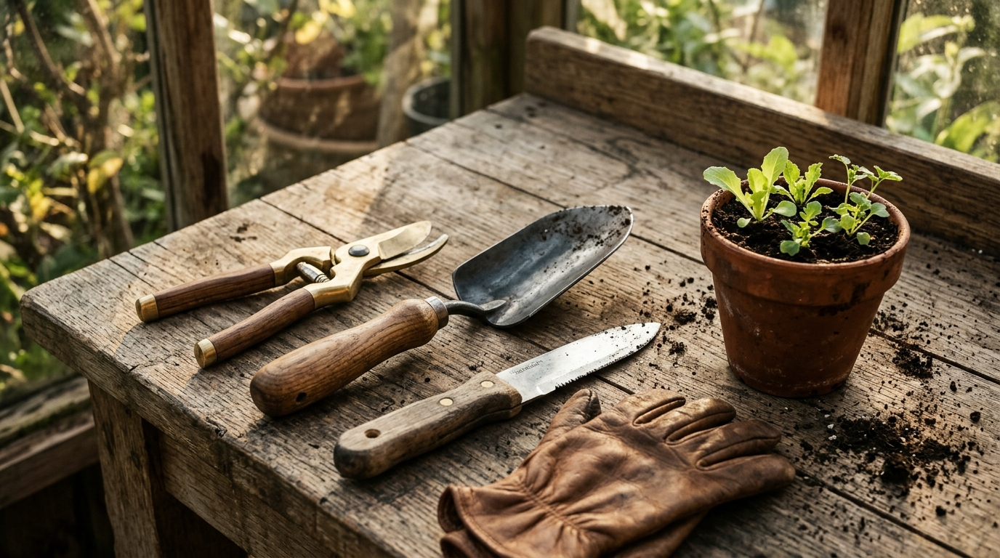
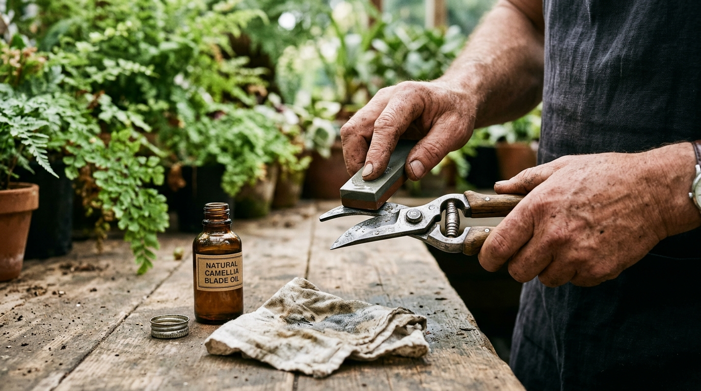

Master Garden Care with Implements Built for a Lifetime.
Great gardens aren't grown with disposable plastic and stamped tin. At Gardencare247, we provide rigorous field guides, high-carbon metallurgy reviews, and seasonal restoration techniques so your garden flourishes and your tools last generations.

Find Your Essential Garden Kit
You don't need a shed full of gadgets. Select your garden size and primary task to see the 4 to 6 foundational tools you actually need.
Where do you grow?
What is your main focus?
Your buying approach?
The Raised Bed Kitchen Cultivator Kit
Designed for turning compost, transplanting seedlings, eliminating weeds cleanly at the root, and daily harvesting.
The 24 Essential Garden Tools
Every tool is detailed with steel specifications, handle construction, ergonomic ratings, and honest upkeep notes.
The 10-Minute Monthly Tool Care Ritual
Clean, sharp tools take 50% less physical effort to use and keep your plants healthy. Here is the straightforward maintenance routine we recommend.

Scrape Dirt & Disinfect
Scrub dried soil with a brass brush. Wipe cutting blades with rubbing alcohol or a mild bleach solution to prevent spreading bacterial canker or mosaic virus between plants.
Hone the Factory 20° Bevel
Use a medium diamond file or whetstone on the beveled side only. Match the existing factory angle (usually 20° to 23°). Never sharpen the flat back side—only remove the burr with one gentle swipe.
Condition Ash Handles
Wooden handles dry out in sun and rain. Lightly rub boiled linseed oil or beeswax paste into the wood once in spring and once in autumn to prevent splinters and rot.
Apply a Light Oil Coat
Wipe steel blades and pivot bolts with a few drops of natural camellia oil or mineral oil. Avoid WD-40, which evaporates quickly and attracts sticky dirt into tool springs.
Sharpening Angles at a Glance
| Tool Type | Recommended Angle | Best Sharpening Tool | How Often |
|---|---|---|---|
| Bypass Pruners | 20° (Single Bevel) | Fine Diamond Paddle (600 Grit) | Every 4 to 6 gardening sessions |
| Garden Spades & Edgers | 45° (Single Outer Bevel) | Single-Cut Bastard File | Twice a season (Spring & Autumn) |
| Hori-Hori Knife | 25° Straight / Tapered Serrated | Diamond Rod / Medium Stone | Monthly during peak planting |
| Push Hoes / Stirrup Hoes | 30° - 35° Double Bevel | Carborundum Whetstone | Every couple weeks for effortless weed slicing |
Your Garden Shed Inventory
Track what you already own and what you still need for the season. Automatically saved in your browser.
Practical Tool Advice & FAQs
Honest answers from experienced gardeners about steel, maintenance, and buying decisions.
High-carbon steel (like Japanese SK-5) can be sharpened to a significantly finer, keener edge than stainless steel. When you cut living plant stems, a sharp carbon blade slices without bruising the tender vascular tissue, which lets the plant heal rapidly. Stainless steel resists rust better, but requires more frequent sharpening and leaves a rougher cut on living wood.
Standard WD-40 is a solvent designed for water displacement, not a durable long-term lubricant. It evaporates rapidly, leaving a sticky chemical film that attracts gritty soil and sand into your pruner's pivot joints. We recommend pure Japanese camellia oil, jojoba oil, or food-grade mineral oil instead. They are natural, odorless, safe for organic edible garden beds, and won't gum up.
The Hori-Hori ("dig-dig" in Japanese) is a heavy steel trowel-knife hybrid. It features one sharp razor edge, one serrated edge for cutting tough roots, a semi-concave scoop for digging, and engraved depth markers for planting bulbs. It essentially replaces three separate tools and easily levers up stubborn taproots that would bend ordinary trowels.
Avoid thick varnish or polyurethane lacquers, which seal moisture into the wood and eventually peel. Instead, give the handle a quick rubdown with 150-grit sandpaper to remove any rough spots, then hand-rub a few spoonfuls of boiled linseed oil or pure tung oil directly into the grain. The oil polymerizes into the wood fibers, producing a soft, splinter-free finish that repels rainwater.
Don't buy 15-piece sets. Start with just three essentials: a quality pair of bypass hand pruners, a forged hand trowel with a solid socket, and a pair of sturdy goatskin gloves. These three implements will handle 80% of all planting, deadheading, and maintenance tasks in small-to-medium gardens.